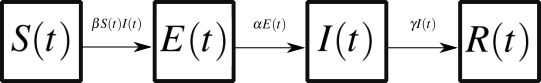

Compartmental models#
In this tutorial, we hope to describe the expected evolution of a system by breaking it down into its relevant parts (or subsystems), the states they can take and the mechanisms that govern possible state transitions. By definition, complex systems are often composed of interacting agents or parts, whose behavior and dynamics are inseparable. Compartmental models provide a systematic way to map the dynamics of these systems. We here propose a simple definition for this modeling techniques and a simple recipe for model building.
Compartmental models are drawn using boxes and arrows. Boxes are compartments in which we can put agents or parts of our system when we judge them to be indistinguishable. And arrows will describe the mechanisms through which things can flow from one compartment to another based on the mechanistic rules of the system.
Consider a really simple system where we are interested in people entering and leaving a building. The relevant agents of our system are people, and we might only want to count those that are in the building and consider them all indistinguishable. We can therefore have a single compartment (representing the state of being in the building) and assume that all people therein are identical: They follow the exact same rules and leave the building at the exact same rate. We assign a dynamic variable \(N(t)\) representing the expected number of agents in the compartment at time \(t\). And two mechanisms can then influence \(N(t)\): New agents can enter the building at rate \(\alpha\) and each agent in the building can leave at rate \(\beta\). This compartmental model can therefore be drawn as:

The above compartmental model represents an open population since there are arrows flowing out and into a void. That void represents a part of the real system that we are not explicitly modeling, here the outside of the building. Note that, in general, we will also omit the time dependency and simply write \(N\), assuming that all compartments can vary in time. Importantly, we said the rate at which agents is fixed at \(\alpha\) (an expected number of new agents over some time period) but the rate at which agent leave the building is applied to each agent independently such that the total exit rate is equal to \(\beta N(t)\). If we have ten times more agents in the building, the total exit rate is ten times higher; and if we have zero agent in the building, the total exit rate is zero.
If we wanted to explicitly model a closed population whose size is conserved in time, we would need a system of compartments with no arrows connecting to the void. We could for example add a compartment for agents outside the building, thereby adding a second dynamical variable \(E(t)\) for the exterior world.

Finally, compartments can also act upon themselves. Imagine for instance that the building is actually a cloning factory where any of the \(N(t)\) agents expected to be in the building at time \(t\) can choose to clone themselves at a rate \(\gamma\). The agents do not leave the building but new ones simply appear and the population grows! This type of feedback mechanism can be represented with a self-loop like so:

The possibilities are endless! There are an infinite amount of models we could specify with this technique. Across \(n\) compartments, there are potentially \(n(n-1)\) arrows between boxes, \(n\) self-loops, and \(2n\) ways to open the system. That’s \(2^{n^2+2n}\) possible model structures, since every mechanism can be turned on or off. That’s over 30,000 structures even with \(n=3\) and that’s ignoring the different ways we could specify the transition rates on each arrow.
Instead of exploring the space of compartmental model blindly, we therefore propose a simple recipe.
Modeling recipe#
In general, we can identify the important states and mechanisms of a system by answering a simple list of questions.
i. What are the key agents of the system? These do not need to all be of the same nature. While epidemiological models all distribute people in compartments, ecological models almost always involve more than one species of agents.
ii. What states can the agents take? A system with \(m\) types of agents that can all take \(n\) different states will therefore consist of \(m\times n\) compartments. States need to be descriptive enough such that agents in the same state can be considered indistinguishable.
iii. How do agents update their state? These mechanisms will specify the arrows from one compartment to another.
iv. Is the system closed or open? Additional mechanisms can describe the arrival/birth or departure/death of agents. Agents coming from or going into a void correspond to arrows connected only to a single compartment, and often mean that the population of agents is not conserved over time.
Examples from epidemiological models#
Let us walk through the modeling recipe and derive some of the most classic compartmental models in epidemiology. We here care about modeling a directly transmissible infectious disease in a population.
i. What are the key agents of the system? We assume that we only care about people, ignoring potential animal reservoirs, or top-down interventions from public health department. Of course, these could be added using additional diagrams if desired.
ii. What states can the agents take? We will also assume that all people with the same epidemiological state are indistinguishable (serostatus or immunological state). This means that there is no variation in susceptibility to a disease, exposure to the pathogen, or immune system once infected. In their simplest form, they therefore classify agents based in a few distinct compartments: Suceptible agents, Exposed agents, Infectious agents, and Recovered agents.
iii. How do agents update their state? Each susceptible agent becomes Exposed at a rate proportional to the number of infectious agents in the population if we assume that all agents can interact with all other agents. Exposed agents transition to an infectious state at a fixed rate as the disease develops. Likewise, infectious agents recover or die from the infection. Regardless if it’s due to immunity or death, recovered agents are fixed in that state forever. That is to say, Recovered agents and Dead agents could be separate compartments but they would then play an identical role in the system.
iv. Is the system closed or open? In general, because outbreaks tend to occur over a short period of time, we ignore demographic dynamics. There is no reproduction (no self-loop), no immigration (input from the void) or anything else of the sort. For longer epidemics, this assumption might become critical.

Compared to the previous models, the one novel thing here is the nonlinear term \(\beta S(t) I(t)\). We had seen constant terms to describe things that happen at a fixed rate regardless of the state of the system (e.g., arrival of new agents at rate \(\alpha\) in the building example). We had seen linear terms like \(\gamma I(t)\) to describe a process that happens at rate \(\gamma\) to all agents \(I(t)\) in a given state, such that the total amount of change \(\gamma I(t)\) depends on the state of the system. The nonlinear term \(\beta S(t) I(t)\) can be described as follows: All agents \(S(t)\) in a susceptible state can be infected at rate \(\beta\) by all agents \(I(t)\) in an infected state. Another way to see this term is that there are \(S(t) \times I(t)\) pairs of susceptible and infectious agents, and all of these pairs create a new infection at rate \(\beta\). We are therefore assuming that all parts or agents of the system interact with all other parts at all time! This is one of those mean-field approximation since we have to assume that \(S(t)\) and \(I(t)\) are independent for the average of \(S\times I\) to be equal to the average \(S(t)\) multiplied by the average \(I(t)\).
The general model structure described above is often called the SEIR model for obvious reasons. There are other classic models. We can ignore the latent period captured by the E compartment by sending individuals directly from S to I to obtain the SIR model. Further, recovered individuals can lose immunity at a rate \(\delta\) and return to the S compartment to give us the SIRS model. If immunity is very short lived, we might even decide to bypass the R compartment altogether and have a simple SIS model.
Regardless of the exact structure, once a compartmental model has been drawn we can start using a standard toolbox from the study of dynamical systems. These tools allow us to write down, run, and analyze the corresponding mathematical model. This is the focus of the rest of this tutorial.